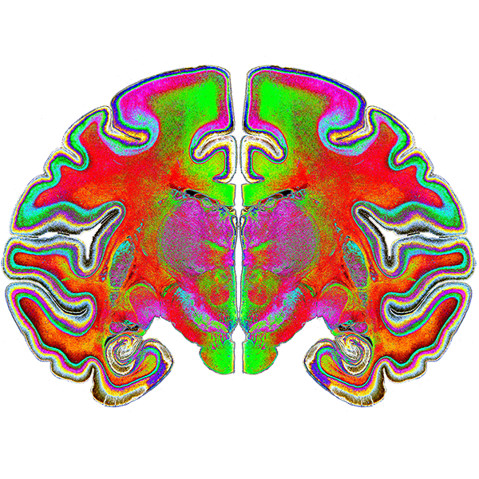

How does our environment guide neural development, and how does the emerging architecture support perception and behavior?
Our research combines neuroimaging, behavior, and electrophysiology to understand how intrinsic and experience-driven processes interact throughout development to shape brain organization and behavior. Our current focus is on neural development supporting visual object recognition across mammalian species.